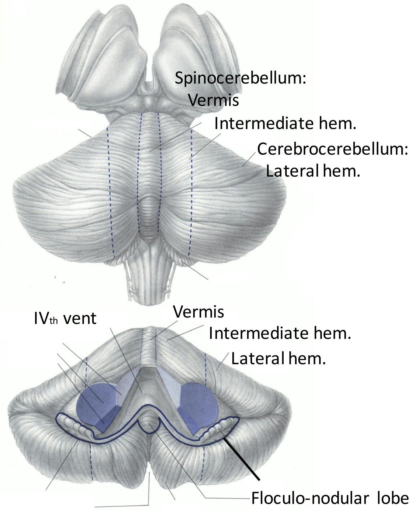
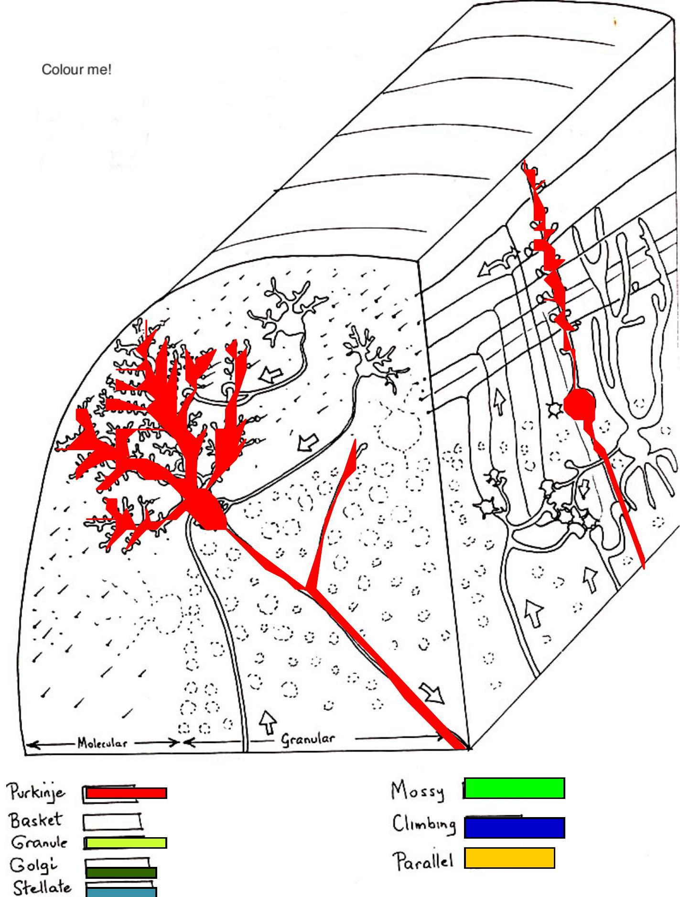

NEUROHISTOLOGY CEREBRUMAND CEREBELLUM
Objectives
- At the end of this lecture, the student should be able to:
- Identify the histological slides of Cerebrum and cerebellum
- List the layers and cell types found in cerebrum and cerebellum cortices and describe their connectivity
- Describe the lamina organization of the cerebrum
- State the applied neurohistology of cerebrum and cerebellum
Cerebrum
- Three parts
- Cerebral cortex
- Medulla
- Deeper nuclei
- Main cell types
- Pyramidal cells
- Granule cells
- Fusiform cells
- Cells of Martinoti
- Horizontal cells of Cajal
Cerebral cortex
- The layer of gray matter covering the entire surface of cerebral hemisphere
- Cell bodies are arranged in superimposed horizontal layers whose study is called archetectonics
- Accommodates enormous number of neurons
- Large surface area accommodates more neurons than deep nuclei
- Gyri and sulci also increase surface area
- Laminar organization also accommodates enormous number of neurons
Cerebral Cortex
Numerical Data
- Total surface area: 2200 $\mathrm{cm}^{2}$ (2.5 $\mathrm{ft}^{2}$)
about I/3 ------ surface area
about $2 / 3$------ hidden in the sulci
- Thickness: 1.5 mm (VI) - 4.5 mm (M I)
Generally, thickest over the crest of the convolution and, thinnest in the depth of sulci
- Weight: 600 gm ( $40 \%$ of total brain weight)
180 gm --------- neurons
420 gm --------- glial cells
Cerebral Cortex
Numerical Data
- Number of neuronal cells in cerebral cortex
| neurons ------------------------ | 15 billion |
| glial cells ------- |
- Estimation of number of cortical neurons
| von Economo and Koskinas (1925) | 14.0 billion |
| Shariff (1953) | 6.9 billion |
| Sholl (1956) | 5.0 billion |
| Pakkenberg (1966) | 2.6 billion |
Allocortex
Archicortex (Archipallium)
Palaeocortex (Paleopallium)
Isocortex
Neocortex (Neopallium)
Layers of the Cerebral Cortex
- Molecular layer; parallel nerve fibers, horizontal cells of Cajal, neuroglia
- External granular layer; small pyramidal cells, granule (stellate) cells, neuroglia
- External pyramidal layer; large pyramidal cells, neuroglia
- Internal granular layer; thin layer composed of closely arranged small granule (stellate) cells, neuroglia.
- Internal pyramidal layer; largest pyramidal cells (Betz cells), neuroglia. This layer has the lowest cell density of the cerebral cortex
- Multiform layer; cells of various shapes (Martinotti cells, fusiform cells, pyramidal etc.), neuroglia
Cerebral Cortex
Histological Organization
Cellular Elements
- Pyramidal Cell - output neuron giant pyramidal cell of Betz
- Fusiform Cell --- modified pyramidal cell
- Granular (Stellate) Cell
- basket cell, double bouquet cell, bipolar cell, chandlier cell, neurogliform cell
- Horizontal Cell of Cajal (Retzius-Cajal cell)
- Cells of Martinotti
Cerebral Cortex

- Pyramidal Cell
- Fusiform Cell
- Granular (Stellate) Cell
- basket cell
- double bouquet cell
- chandlier cell
- neurogliform cell
- Horizontal Cell of Cajal
- Cells of Martinotti a:axon
Golgi
Weigert


- Molecular Layer
- External Granular Layer
- External Pyramidal Layer Line of Kaes-Bechterew
- Internal Granular Layer Outer band of Baillarger
- Internal Pyramidal Layer Giant pyramidal cell of Betz Inner Band of Baillarger
- Multiform Layer
- Line of Gennari in area 17
Cortical Afferent Fiber
- Corticocortical fiber association fiber commissural fiber
- Thalamocortical fiber - specific and non-specific
- Extrathalamic subcortical fiber cholinergic fiber - acetylcholine basal nucleus of Meynert mesolimbic dopaminergic fiber - dopamine ventral tegmental area serotonergic fiber - serotonine - raphe nuclei norepinephrinergic fiber - norepinephrine nucleus locus ceruleus
Cortical Afferent Fiber
- association fiber
- commissural fiber
- specific thalamocortical fiber
- non-specific thalamocortical fiber
Cortical Efferent Fiber
- Corticofugal Fiber - Projection Fiber corticostriate fiber corticothalamic fiber corticorubral fiber corticotectal fiber corticopontine fiber cortico-olivary fiber corticobulbar fiber corticospinal fiber
- Corticocortical Fiber
Association fiber
Commissural fiber
Cortical Efferent Fiber
- association fiber
- commissural fiber
- corticostriate fiber
- corticorubral fiber corticopontine fiber corticobulbar fiber
- corticospinal fiber corticotectal fiber
- corticothalamic fiber
Columnar Cortical Unit and Cortical Cireuitary
A. pyramidal neuron
B. excitatory granular cell
C. inhibitory granular cell
I. afferent fiber
2. efferent fiber
3. corticothalamic fiber
Characteristics of cerebral module
- Neurons are all related to the same peripheral receptor field
- Neurons of the same module are activated by the same kind of peripheral stimulus
- All cells of the module are arranged radially, perpendicular to cortical layers
- Intracortical circuits involve cells in all parts of the module
- Excitation of one module is accompanied by inhibition of adjacent columns
Regional Variation of Cortical Lamination
A. Homotypical isocortex
- association cortex
B. Heterotypical isocortex
- granular cortex
- primary sensory cortex
VI (I7), SI (3), A I (4I)
- agranular cortex
- motor cortex
M I (4), PM (6)
Von Economo's classification of cortical types

1. agranular, 2. frontal, 3. parietal, 4. polar, 5. granular

1. agranular, 2. frontal, 3. parietal, 4. polar, 5. granular
Cerebellum
- Outer gray matter "cortex"
- Molecular layer- Purkinje cell layer
- Granular layer
- Inner white matter "medulla"
- Surrounded by piamater
Motor Hierarchy

Exerts influence at all levels

Input-output Organization

Cerebellar divisi
Spinocerebellum
(Vermis + Intermed. Hem)
Control of limbs and trunk
Cerebrocerebellum (Lateral hemisphere)
Planning of movement+
Vestibulo-cerebellum (Floculo-nodular lobe)
Control of eye & head movements Balance
NTA Fig. 13-1
Cerebellum cortex
- The cerebellar cortex has the same appearance regardless of which region is examined.
- Outermost layer, the molecular layer (Mol), is lightly stained with eosin.
- Under this is the granular layer (Gr), which stains intensely with hematoxylin.
- Embedded in between is the purkinje layer
- The three layers constitute the cortex of the cerebellum.

Molecular layer
- lies directly below the pia mater
- contains
- superficially located stellate cells
- basket cells
- Purkinje cells and their dendrites
- unmyelinated axons from the granular layer (parallel fibers)
- Purkinje cells
- large pear-shaped cells
- arborized dendrites projecting into the molecular layer
- myelinated axons project into the white matter
- only cell of the cerebellar cortex that sends information (always inhibitory) to the outside
Granular layer
- Contains
- small granule cells
- Golgi type II cells
- glomeruli; synaptic regions between axons entering the cerebellum and the granule cells.
- Axons of the granule cells extend to the molecular layer and synapse with the dendrites of Purkinje cells and basket cells (parallel fibers).
- Parallel fibers extend parallel to the longitudinal axis of the folium in the molecular layer.

Cerebellar Cortex

Inputs
Climbing fibers
- from Inferior olive
Mossy fibers
Output
Purkinje neurons
Interneurons
Granule neurons
Stellate neurons
Basket neurons
Golgi neurons
NTA Fig. 13-11
Purkinje Cell.
Only output of cerebellum GABAergic inhibition
Excitatory Inputs.
Mossy fibre to granule cells to parallel fibres to spine synapses on Purkinje cells Vast combinations provide the sensory context

Climbing fibre Covers whole dendritic tree of Purkinke cell All-or-nothing activation

Purkinje
Basket
Granule
Golgi
Stellate
Interneurons.
Golgi for Granule cells Basket and Stellate for Purkinje cells Inhibitory (GABA, glycine etc) Diversity increases With cerebellar complexity (greatest variety in anthropoid primates)

Mossy □
Climbing □
Parallel □
Cerebellar Cognitive Affective
Disorder
- Lesions of the posterior cortex and vermis
- Impairment of executive functions
- Planning, verbal fluency, abstract reasoning
- Difficulties with spatial cognition
- Visuo-spatial organization, visual memory
- Personality changes
- Blunting of affect, inappropriate behaviors - Language disorders
- Agrammatism
Thankyou!
Thankyou!
THANK YOU